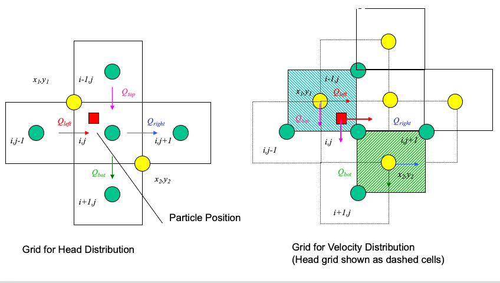
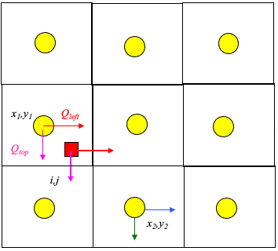
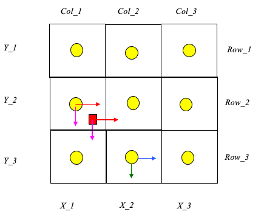
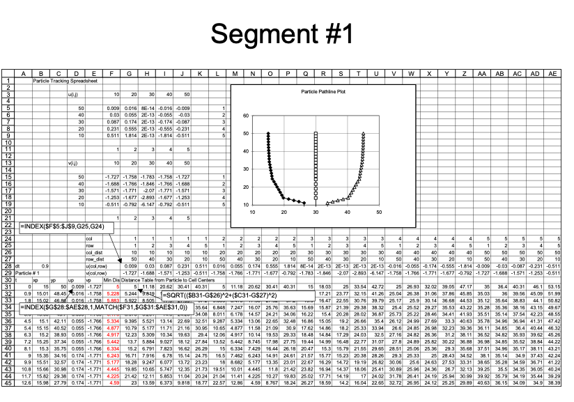
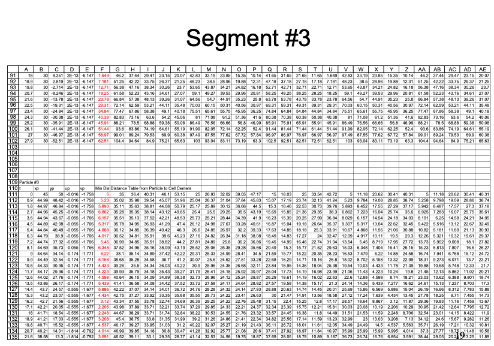

Advection¶
Advection (convection) is the transport of dissolved or suspended material by motion of the host fluid. The prediction of the direction and amount of material transported requires knowledge of the fluid velocity field (the velocity of a fluid particle).

The figure depicts the flow of a labeled fluid in a tube. One can use the sketch to define various useful properties of the labeled fluid portion as listed.
Property |
Expression |
|---|---|
Mass of labeled fluid |
\(m=\rho A\Delta L\) |
Mass of tracer |
\(m=C A\Delta L\) |
Distance traveled by leading (trailing edge) |
\(x=\Delta L\) |
Time required to travel distance |
\(time = \Delta t\) |
Velocity of leading edge |
\(u = \frac{x}{time} = \frac{\Delta L}{\Delta t}\) |
Mass through circular frame/unit time |
\(m=\frac{\rho A\Delta L}{\Delta t}\) |
Tracer through circular frame/unit time |
\(m=\frac{C A\Delta L}{\Delta t}\) |
Fluid mass flux |
\(J=\rho\frac{UA}{A}=\rho\frac{Q}{A}=\rho U\) |
Tracer mass flux |
\(J=C\frac{UA}{A}=C\frac{Q}{A}=C U\) |
The advective flux is the product of the quantity of interest (in this case mass of either host fluid or tracer) and the velocity term. Typically the mean section velocity is used (pipe flow, open channel flow) because fine scale resolution of the velocity field is impossible. In porous media, the pore velocity or average linear velocity is used. Advection calculations usually use mean section velocity based on discharge measurements.
Modeling Advection¶
1D Examples are in the textbook; 1D is not too difficult as the direction hence the path is known.
Higher spatial dimensions (2D, 3D) use either a particle tracking approach (DPRW, MOC, MT3D, …) or flux-limited Reynolds-averaged Navier-Stokes (FLUENT, SUTRA, HST3D, ….)
Later on we will use USGS-MOC, so will illustrate particle tracking.
Particle or front tracking is typically performed using special software.
It can be performed using a spreadsheet.
The spreadsheet exercise is useful to illustrate the principles involved in particle tracking calculations.
Particle tracking with reactions is very computationally intensive and is beyond practical application in a spreadsheet; such computations are used to design space shuttles, helicopters and other things where the knowledge gained justifies the costs
The first step is to compute the velocity field (if it is steady even better, if not then every time increment it is recomputed)
If analytical functions are available for the velocity field then tracking is relatively easy.
Usually the velocity field is determined numerically at discrete points in space, and this is the situation of interest.
The interpolation schemes in common use are simple; simple, simple-linear, and multi-linear schemes.
Only the simple-linear scheme preserves cell-by-cell mass balances.
The figure below illustrates simple linear interpolation.

Typical computational grid for heads.
Arrows are the interfacial fluxes.
The simple scheme assigns the top and left flux to \((x_1,y_1)\).
The simple scheme assgins the right and bottom flux to \((x_2,y_2)\).
The particle velocity is determined by position of the particle relative to the velocity grid.

Uses the same grid as the head scheme. Velocity is the distance weighted average of the cell that the particle occupies.

From the above figure, the particle’s velocities (x- and y- directions) are:
\(u_p = \frac{1-\delta x}{\Delta x}u(x_1,y_1)+\frac{\delta x}{\Delta x}u(x_2,y_2)\)
\(v_p = \frac{1-\delta y}{\Delta y}v(x_1,y_1)+\frac{\delta y}{\Delta y}v(x_2,y_2)\)
Multi-Linear Interpolation¶
Higher order schemes produce smoother velocity fields at the expense of cell mass balances and computational ease. The USGS-MOC model uses a bi-linear scheme where the velocities at the four corners of the occupied cell are used. When transient flow fields occur, averaging in time is also used. The differences in the schemes are hard to detect when the grid spacing is small and the flow field is smoothly varying.
Spreadsheet Approach¶
To illustrate particle tracking the simple velocity scheme is used.
Extension to higher order schemes is straight forward.
Illustrate with simple scheme. Consider:

Large rectangles represent the velocity grid.
Circles represent the geometric location where velocity is known.
Small rectangle represents the particle that we wish to track.
Cell Indexing

Each cell represents a grid location in the velocity field. Thus each cell has a unique row and column index.
Each cell centroid also has a unique geomteric (x,y) location.
The particle in the figure is located in cell named: Col_1,Row_2.
The cell is located at position: (X_1,Y_2).
The particle position is (XP,YP).
Locating the Particle
At the start of a time-step:
particle position is known.
cell positions are known.
cell that the particle occupies is unknown.
Construct a distance table
The distance from each cell to the particle is calculated and stored in a table.
Search the table,find the cell nearest the particle.
The cell coordinates of the smallest distance in the table is determined
Locating in Excel
The spreadsheet function that finds the value in an array (rectangular area of cells), given the position in the array to search is the function
INDEX(array,row_index,column_index)The spreadsheet function that can find the position in an array where a particular value appears is the function
MATCH(value,array,type)
INDEX Function
INDEX(array,row_index,column_index)array is the location of the rectangular area of cells to search (eg. A3:C6). row_index is number of rows down from the starting row to search. column_index is the number of columns across from the starting column to search.
MATCH Function
MATCH(value,array,type)value is the numerical value to search for in the array. array is the location of the rectangular area of cells to search (eg. A3:C6). type is the type of match to use. type=0 means exact matching.
Using the Functions
The
INDEXfunction allows us to select the correct values of velocity if we know which cell the particle resides in.The
MATCHfunction allows us to compare values in an array and determine the position in the array that these values are found.
Thus theMATCHfunction lets us search a distance table, find the cell center nearest the particle, and then use the index to find the correct velocity.
Moving the Particle
Once the cell containing the particle is identified, the particle is assigned the velocity values for that cell. The particle is then “moved” by the simple kinematic calculation:
\(x_p(t+\Delta t)=x_p(t)+u_p(t)\Delta t\)
\(y_p(t+\Delta t)=y_p(t)+v_p(t)\Delta t\)
Illustrative Example
An example with 3 particles is shown below - the spreadsheet is kind of big because iterative computations are intentionally avoided.

Closer view for particle 1:

Closer view for particle 2:

Closer view for particle 3:

Summary
Particle tracking is a tool to determine the position of a fluid particle in a flow field.
A two-step approach is required:
Determine particle velocity
Locate the particle relative to known velocity locations.
Assign the velocity to the particle based on an interpolation scheme.
Move the particle.
All particle tracking programs use this type of two-step logic.